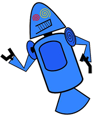
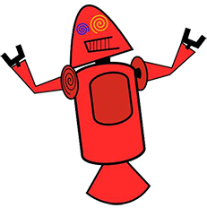
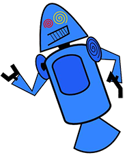
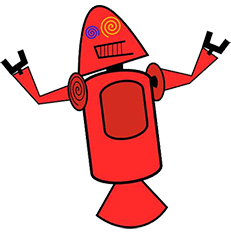

HISTÓRIA DO MASCOTE DO ANDROID
Provavelmente você sabe queosistema operacional Android,mantido pelo Googleéum dos mais utilizados para dispositivos móveis em todoomundo.Mas tavez você não saba queoseu simpático mascote tem um nomeeuma história muito curiosa?Pois acompanhe esse artigo para aprender muita coisa sobre esse robozinho.
A PRIMEIRA VERSÃO
Aprimeira tentativa de criar um mascote surgiu em 2007eveio de um desenvolvedor chamado Dan Morrill.Ele conta que abriuoInkscape(software livre para vetorização de imagens)e criou sua própria versão de robô.Oobjetivo era apenas personificarosistema apenas paraaasua equipe,não existia nenhuma solicitação da empresa paraacriação de um mascote

  
 
Essa primeira versão bizarra até foi batizada em homenagem ao seu criador:seriam os Dandroids.
SURGE UM NOVO MASCOTE
Aideia de ter um mascote foi amadurecendoeamissão foi passada para uma profissional da area.Ailustradora Russa Irina Blok,também funcionária do Google,ficou comamissão de representaropequeno robô de uma maneira mais agradável.

Aideia principal da Irina era representar tudo graficamente com poucos traçosede forma mais chapada.Odesenho também deveria gerar identificação rápida com quemoolha.Surgiu entãoo Bugdroid,onovo mascote do Android.

Aideia principal da Irina era representar tudo graficamente com poucos traçosede forma mais chapada.Odesenho também deveria gerar identificação rápida com quemoolha.Surgiu entãoo Bugdroid,onovo mascote do Android.
Quer aprnder mais?
Outro assunto curioso em relação ao Android é que cada versão sempre foi nomeada em homenagem a um doce, em ordem alfabética a partir da versão 1.5 até a 9.0.
- 15-Cupcake
- 16-Donut
- 30-Eclar
- 22-Frayo
- 23-Gingerbread
- 30-Honeycomb
- 40-Ice Cream Sandwich
- 4.1-Jelly Bean
- 44-Kat
- 5.0-Loipop
- 6.0 Marshmallow
- 7.0 Nougat
- -80-Omo -Orea
- 90-P
Infelizmente o Android Q não existiu, pois o Google resolveu por fim a essa divertida prática e começou a usar numerações, o que deu origem ao Android 10.
Acesse aqui o site Android History para conhecer a sequencia das versões "adocicadas" e o que cada uma trouxe para o sistema Android